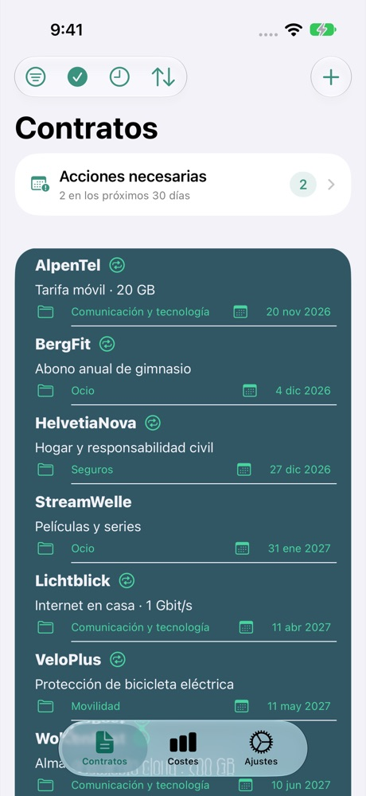
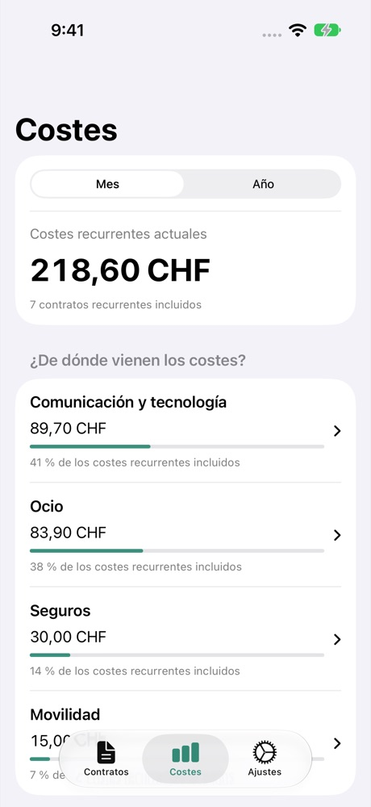

Controla los plazos
Sigue los plazos de cancelación y configura avisos. También puedes añadir fechas a Calendario y Recordatorios.
PARA TU DÍA A DÍA
Costes, plazos de cancelación y documentos: Contractly pone orden en tus contratos. Directamente en tu iPhone.
Ver en el App StoreHasta 4 contratos gratis · Contratos ilimitados con Premium

Sigue los plazos de cancelación y configura avisos. También puedes añadir fechas a Calendario y Recordatorios.
Compara los costes mensuales y anuales. Suma los importes en una misma moneda de visualización.
Adjunta PDF, fotos, escaneos y enlaces a tus contratos. Encuentra los documentos donde los necesitas.

CONTRACTLY
Desde tu tarifa móvil hasta el gimnasio: consulta tus gastos recurrentes. Los importes convertidos son orientativos.
Introduce el proveedor, la duración y el preaviso.
Registra los costes y adjunta documentos.
Revisa los plazos y configura avisos.
Los contratos y documentos se guardan en tu dispositivo. No necesitas una cuenta de Contractly. Algunas funciones utilizan servicios externos.
El tratamiento de datos en detalle →Gestiona hasta cuatro contratos gratis. Premium elimina este límite. Consulta el precio y las condiciones actuales en el App Store o en el diálogo de compra.
Sí. La función de copia de seguridad y restauración permite exportar y restaurar contratos, documentos y ajustes. Las copias exportadas no están cifradas: guárdalas en un lugar seguro.